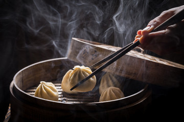

Food sections
Welcome to the Chinese food section of my webpage.
-
- Dumplings: 500 PKR

- Dumpling is a broad class of dishes that consist of pieces of cooked dough (made from a variety of starchy
sources), often wrapped around a filling.
- Chicken Dumpling
- Mutton Dumpling
- Beef Dumpling
-
- Kung Pao Chicken: 1000 PKR

- Kung Pao chicken, also transcribed Gong Bao or Kung Po, is a spicy, stir-fried Chinese dish made with cubes
of chicken, peanuts, vegetables, and chili peppers.
-
- Sweet and Sour Pork: 2000 PKR

- A classic Chinese sweet and sour pork stir-fry recipe made with juicy pieces of pork tenderloin, bell
peppers, onion, and pineapple.
- Chicken Sweet and Sour Pork
- Beef Sweet and Sour Pork
- Mutton Sweet and Sour Pork
Go Back